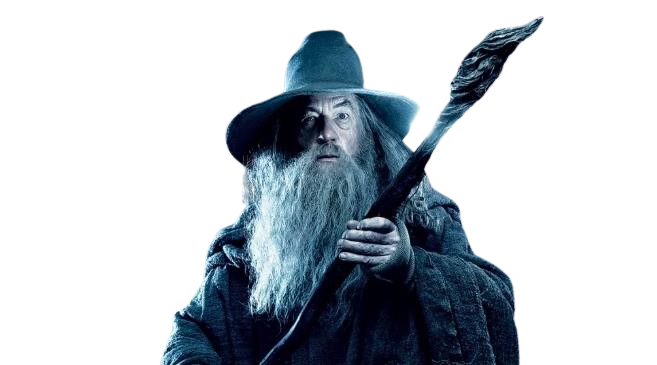
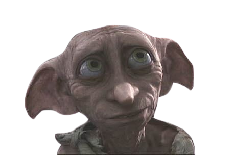
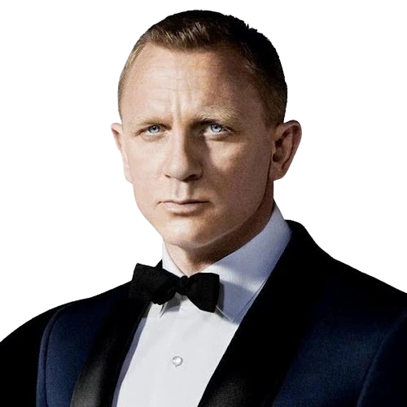
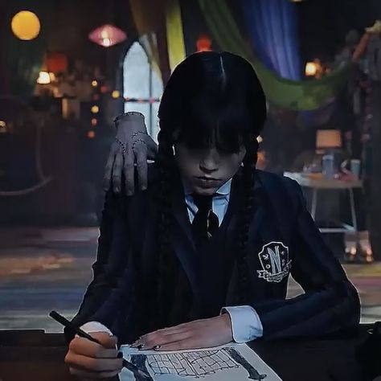
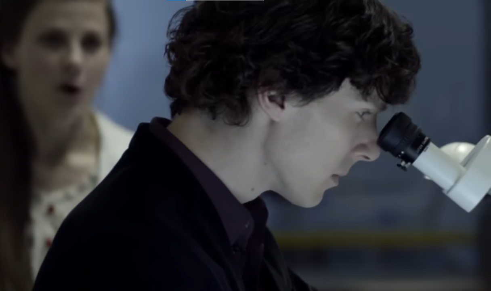
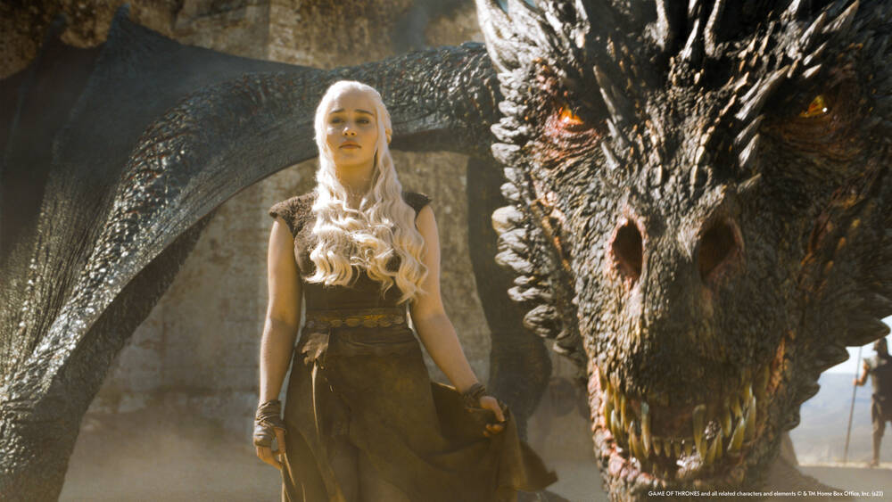
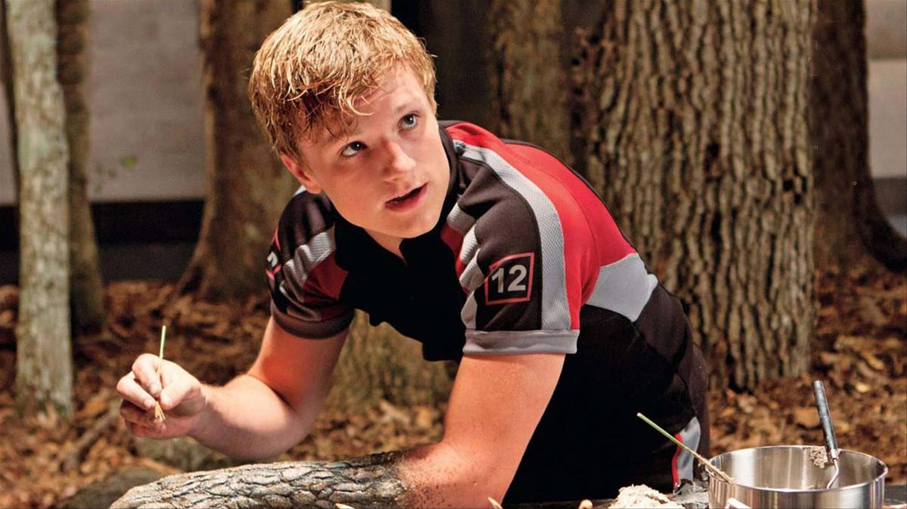

← Back
16 MBTI Personality Types
A simple guide to understanding personality types
What is MBTI?
The Myers-Briggs Type Indicator (MBTI) is a personality framework that categorizes people into
16 different personality types. It focuses on how individuals prefer to think, make decisions,
and interact with the world around them. Understanding these preferences can help people
recognize their strengths, behaviors, and how they relate to others.
The MBTI was developed by Isabel Briggs Myers and Katharine Cook Briggs, inspired by the
psychological theories of Carl Jung. Today, it remains one of the most widely known and
commonly used personality frameworks.
The MBTI describes 16 different personality types. Click on a personality type below to
learn more about its characteristics, strengths, and potential weaknesses.
Analysts |
The Architect
INTJ
Highly imaginative and strategic individuals who like having a clear plan for almost everything.
|
The Thinker
INTP
Curious, innovative, and analytical individuals who enjoy exploring ideas and concepts.
|
The Commander
ENTJ
Bold, strategic leaders who enjoy taking charge and achieving goals efficiently.
|
The Debater
ENTP
Quick-witted, enthusiastic individuals who love debate and exploring new ideas.
|
Diplomats |
|

The Advocate
INFJ
Creative and insightful individuals who are driven to help others and improve the world.
|

The Mediator
INFP
Idealistic, empathetic, and deeply thoughtful individuals who value harmony and authenticity.
|
The Giver
ENFJ
Charismatic and inspiring leaders who enjoy guiding and motivating others.
|
The Champion
ENFP
Enthusiastic, creative, and sociable individuals who love exploring possibilities.
|
Sentinels |
The Inspector
ISTJ
Practical and responsible individuals who value tradition and order.
|
The Protector
ISFJ
Warm, dependable individuals who are committed to helping and supporting others.
|
The Director
ESTJ
Organized and confident leaders who value structure and efficiency.
|
The Caregiver
ESFJ
Friendly, conscientious individuals who enjoy helping others and maintaining harmony.
|
Explorers |
|

The Crafter
ISTP
Adaptable and practical individuals who enjoy hands-on problem solving.
|
The Artist
ISFP
Sensitive, creative individuals who enjoy expressing themselves through their work.
|
The Persuader
ESTP
Energetic and bold individuals who enjoy action and engaging with the world.
|
The Performer
ESFP
Outgoing, playful, and spontaneous individuals who love entertaining others.
|
INTJ – The Architect

INTJs are strategic, analytical, and fiercely independent thinkers. They are visionaries who excel at creating long-term plans
and pursuing their goals with precision and determination. Much like Wednesday Addams, they often come across as reserved or
mysterious, but beneath that calm exterior lies a sharp, highly observant mind that notices patterns and connections others might
miss. INTJs value knowledge and efficiency, and they approach challenges logically, preferring well-thought-out solutions over
impulsive actions.
Key Traits:
- Analytical and logical
- Highly independent and self-motivated
- Strategic planner with long-term vision
- Curious and constantly seeking knowledge
- Private, often mysterious, like Wednesday herself
Strengths:
- Excellent problem-solving skills
- Determined and goal-oriented
- Innovative and creative thinker
- Ability to see the bigger picture and plan ahead
- Strong intuition about people and situations
Potential Weaknesses:
- May appear distant or aloof
- Perfectionist tendencies can be demanding on themselves and others
- Can be overly critical of inefficiency or mistakes
- Sometimes struggles with emotional expression
INTP – The Thinker

INTPs are intellectual explorers who thrive on understanding complex systems and uncovering hidden patterns.
Much like Sherlock Holmes, they have a natural talent for observation, deduction, and logical reasoning.
They prefer diving deep into abstract concepts and theories rather than engaging in small talk or social conventions.
INTPs are curious, innovative, and enjoy challenging their minds with puzzles, problems, and ideas that stretch the boundaries
of conventional thinking.
Key Traits:
- Analytical and highly logical
- Curious and deeply inquisitive
- Independent thinker, often unconventional
- Enjoys abstract ideas and theoretical exploration
- Observant, with attention to details others might miss, like Sherlock himself
Strengths:
- Exceptional problem-solving abilities
- Innovative and creative in finding solutions
- Strong reasoning and analytical skills
- Ability to detach emotionally to think objectively
- Quick learner and adaptable in new intellectual challenges
Potential Weaknesses:
- Can be socially withdrawn or awkward
- May overthink and become indecisive
- Tends to ignore emotional needs, both their own and others’
- Sometimes seen as aloof, detached, or eccentric
ENTJ – The Commander
ENTJs are confident, strategic, and natural leaders who excel at organizing systems and achieving ambitious goals. Much like
Tony Stark, they are charismatic, persuasive, and unafraid to take risks to accomplish their vision. ENTJs are quick to recognize
inefficiencies and are driven to implement effective strategies to improve them. They value competence and efficiency, and their
determination often inspires others to follow their lead. ENTJs approach challenges with logic, assertiveness, and a relentless
drive for success.
Key Traits:
- Confident and decisive
- Strategic thinker and long-term planner
- Charismatic and persuasive leader
- Efficient, goal-oriented, and results-driven
- Innovative and willing to take calculated risks (like Tony Stark)
Strengths:
- Natural leadership skills and ability to inspire others
- Excellent at organizing and improving systems
- Highly determined and goal-focused
- Quick problem-solving and decision-making abilities
- Confident and persuasive in presenting ideas
Potential Weaknesses:
- Can be domineering or overly controlling
- May struggle to delegate tasks effectively
- Sometimes impatient with less efficient individuals
- Can appear arrogant or overly competitive
- Tendency to prioritize work over emotional connections
ENTP – The Debater
ENTPs are energetic, witty, and endlessly curious individuals who love exploring new ideas and possibilities. Much like Jack Sparrow,
they are clever, resourceful, and often unpredictable, thriving in situations that allow them to think on their feet. ENTPs enjoy
challenging norms, debating perspectives, and brainstorming innovative solutions. They are natural persuaders who can charm or
convince others with their charisma and quick thinking, and they thrive in environments that are dynamic and full of opportunities
for adventure.
Key Traits:
- Inventive and creative problem-solvers
- Quick-thinking and adaptable
- Outgoing, charismatic, and persuasive
- Enjoys intellectual challenges and debates
- Resourceful and often unconventional, like Jack Sparrow
Strengths:
- Excellent at generating new ideas and approaches
- Skilled at thinking on the fly and adapting to change
- Charismatic and socially influential
- Confident and adventurous in trying new experiences
- Can find creative solutions where others see obstacles
Potential Weaknesses:
- Can be impulsive or reckless
- May struggle with follow-through or finishing projects
- Sometimes argumentative or contrarian for fun
- Can appear unreliable or unpredictable
- Occasionally prioritizes novelty over practicality
INFJ – The Advocate

INFJs are compassionate, insightful, and visionary individuals who seek deeper meaning and connection in everything they do.
Much like Gandalf, they often serve as guides, mentors, or advisors, using their understanding of people and situations to make a
positive impact. INFJs are deeply principled, valuing harmony and integrity, and they are driven to help others reach their
potential. They have a strong intuition about others’ motivations and often see solutions and patterns that others overlook,
making them natural advocates and strategists.
Key Traits:
- Empathetic and compassionate
- Insightful and intuitive about people and situations
- Visionary with a strong sense of purpose
- Principled and guided by strong values
- Often acts as a mentor or guide, like Gandalf
Strengths:
- Deep understanding of human nature and emotions
- Strong moral compass and sense of justice
- Ability to inspire and guide others
- Strategic and forward-thinking in problem-solving
- Persistent and committed to meaningful goals
Potential Weaknesses:
- Can be overly idealistic or perfectionistic
- May take on too much responsibility for others
- Sometimes struggles to express their own needs
- Can be private or reserved, making connection difficult
- Occasionally becomes stressed when reality falls short of ideals
INFP – The Mediator

INFPs are gentle, imaginative, and deeply guided by their personal values. They believe strongly in doing what is right and
often strive to live in a way that reflects their ideals. Much like Dobby, they are compassionate individuals who care deeply
about freedom, kindness, and helping others. INFPs often see possibilities that others overlook, using their creativity and
empathy to support people and make the world a better place. Although they may appear quiet or reserved, they possess a strong
inner conviction that drives them to stand up for what they believe in.
Key Traits:
- Compassionate and empathetic toward others
- Strongly guided by personal values
- Imaginative and creative
- Curious about people and ideas
- Loyal and sincere, much like Dobby
Strengths:
- Deep empathy and emotional understanding
- Creative thinking and imagination
- Strong moral compass
- Supportive and encouraging toward others
- Dedicated to helping people grow and find meaning
Potential Weaknesses:
- Can be overly idealistic or sensitive
- May struggle with criticism or conflict
- Sometimes finds it difficult to make practical decisions
- Can become discouraged when reality conflicts with their ideals
- May focus too much on helping others and neglect their own needs
ENFJ – The Giver

ENFJs are charismatic, empathetic, and natural leaders who are deeply aware of the emotions and needs of others.
They often feel a strong responsibility to help people grow and improve their lives. Much like Daenerys Targaryen,
ENFJs are driven by a powerful vision of a better future and are willing to inspire others to fight for it.
They are passionate about justice, fairness, and protecting those who cannot protect themselves.
Because of their ability to motivate and unite people, ENFJs often become influential leaders who encourage
cooperation, loyalty, and teamwork.
Key Traits:
- Charismatic and inspiring
- Highly empathetic and emotionally aware
- Natural leaders who motivate others
- Strong sense of justice and responsibility
- Passionate about helping others succeed, much like Daenerys
Strengths:
- Excellent communication and leadership skills
- Strong ability to inspire and unite people
- Supportive and encouraging toward others
- Passionate about meaningful causes
- Good at building strong communities and teamwork
Potential Weaknesses:
- Can become overly idealistic about their vision
- May take criticism very personally
- Sometimes puts others' needs before their own
- Can become controlling when trying to protect their goals
- May struggle when others do not share their values
ENFP – The Champion

ENFPs are enthusiastic, creative, and deeply passionate about people and possibilities. They are known for their ability
to see potential in both ideas and individuals. Much like Peeta Mellark, ENFPs are compassionate and emotionally expressive,
often inspiring others with their sincerity and optimism. They enjoy forming meaningful connections and are driven by their
desire to encourage, support, and uplift the people around them. Their imaginative thinking and spontaneous nature allow them
to adapt quickly to new situations while still staying true to their personal values.
Key Traits:
- Energetic and enthusiastic
- Creative and imaginative
- Empathetic and emotionally expressive
- Encouraging and supportive of others
- Optimistic and hopeful, much like Peeta
Strengths:
- Excellent at motivating and inspiring people
- Strong communication and interpersonal skills
- Highly creative and open-minded
- Passionate about causes and personal values
- Adaptable and able to see new possibilities
Potential Weaknesses:
- Can become overwhelmed by emotions
- May struggle with focusing on routine tasks
- Sometimes overly idealistic
- Can have difficulty handling criticism
- May start many projects but struggle to finish them
ISTJ – The Inspector

ISTJs are quiet, practical, and highly responsible individuals who value reliability and order. They work carefully and
consistently to achieve their goals, often planning thoroughly before taking action. Much like Hermione Granger, they take pride
in following rules, maintaining structure, and ensuring that everything is done correctly. ISTJs are loyal, dutiful, and respectful
of traditions, and they prefer predictable and organized environments where they can excel. Their dedication to duty and attention
to detail makes them dependable guides and problem-solvers in any situation.
Key Traits:
- Responsible, reliable, and disciplined
- Practical and detail-oriented
- Organized and structured in approach
- Loyal and values tradition
- Highly dependable, like Hermione Granger
Strengths:
- Excellent at planning and following through
- Strong sense of duty and responsibility
- Highly organized and methodical
- Dependable and trustworthy
- Good at maintaining order and structure
Potential Weaknesses:
- Can be overly rigid or inflexible
- May struggle with spontaneity or change
- Sometimes overly critical of mistakes
- Can appear reserved or emotionally distant
- May have difficulty embracing unconventional ideas
ISFJ – The Protector
ISFJs are loyal, dependable, and deeply caring individuals who take their responsibilities seriously. Much like Superman,
they quietly dedicate themselves to protecting and supporting others, often putting the needs of people around them before
their own. They are practical, detail-oriented, and highly organized, striving to create harmony and stability in their
environment. ISFJs are attentive to the feelings and needs of others, remembering small details and going out of their way
to help. Their strong sense of duty, combined with empathy and reliability, makes them the steady and supportive presence
that others can always count on.
Key Traits:
- Loyal and dependable
- Responsible and duty-focused
- Practical and detail-oriented
- Empathetic and attentive to others’ needs
- Protective and supportive, like Superman
Strengths:
- Highly reliable and trustworthy
- Strong sense of duty and responsibility
- Attentive and considerate toward others
- Organized and thorough in tasks
- Creates stability and harmony in their environment
Potential Weaknesses:
- May put others’ needs above their own too often
- Can be overly cautious or resistant to change
- Sometimes struggles to express their own desires
- May become stressed when expectations aren’t met
- Can be private or reserved, making emotional connection slower
ESTJ – The Director
ESTJs are practical, organized, and decisive leaders who excel at creating order and ensuring efficiency. Much like Obi-Wan Kenobi,
they are disciplined and rely on rules and logical systems to guide their decisions. ESTJs are confident in managing people and
projects, making sure that tasks are completed properly and on time. They value structure, responsibility, and clarity, often
taking charge in situations that require direction and accountability. Their ability to lead, plan, and enforce standards makes
them reliable and highly effective in both personal and professional environments.
Key Traits:
- Organized, practical, and results-driven
- Decisive and confident in leadership
- Values rules, structure, and order
- Responsible and dependable
- Disciplined and strategic, like Obi-Wan Kenobi
Strengths:
- Excellent at managing people and projects
- Clear and logical decision-making
- Strong organizational skills
- Reliable and responsible
- Good at creating structure and maintaining standards
Potential Weaknesses:
- Can be overly rigid or inflexible
- May struggle with improvisation or unexpected changes
- Sometimes comes across as controlling
- Can be overly focused on rules at the expense of personal relationships
- May have difficulty accepting others’ alternative approaches
ESFJ – The Caregiver

ESFJs are warm, social, and supportive individuals who genuinely care about the well-being of others. Much like Elle Woods, they
enjoy helping people succeed and creating a positive and harmonious environment around them. ESFJs are highly attuned to the needs
and feelings of others, often going out of their way to make people feel appreciated and valued. They are dependable and dedicated,
managing tasks efficiently while maintaining strong social connections. Their natural ability to nurture, organize, and encourage
those around them makes them trusted friends, colleagues, and leaders in their communities.
Key Traits:
- Warm, empathetic, and socially aware
- Supportive and encouraging toward others
- Reliable and responsible
- Values harmony and strong relationships
- Organized and helpful, like Elle Woods
Strengths:
- Excellent at maintaining positive relationships
- Attentive to the needs and feelings of others
- Highly dependable and responsible
- Skilled at organizing and managing tasks
- Encouraging and motivating to people around them
Potential Weaknesses:
- May be overly concerned with others’ opinions
- Can struggle with setting personal boundaries
- Sometimes avoids conflict to keep harmony
- May overextend themselves to help others
- Can be sensitive to criticism
ISTP – The Crafter

ISTPs are calm, adaptable, and highly observant individuals who prefer to analyze situations carefully before acting. Much like
James Bond, they are practical problem-solvers who can quickly assess challenges and develop efficient, logical solutions.
ISTPs enjoy understanding how things work, whether it’s gadgets, systems, or strategies, and often excel in hands-on tasks.
They are independent, resourceful, and flexible, able to react to unexpected changes with skill and precision. While they may
seem reserved or detached at times, their sharp instincts and ability to stay composed under pressure make them reliable and
effective in critical situations.
Key Traits:
- Calm, observant, and adaptable
- Practical problem-solvers
- Independent and resourceful
- Analytical and logical thinkers
- Efficient and skilled in hands-on tasks, like James Bond
Strengths:
- Quick decision-making in high-pressure situations
- Excellent at analyzing and solving problems
- Highly independent and self-reliant
- Adaptable and flexible in changing environments
- Strong technical and practical skills
Potential Weaknesses:
- May be emotionally reserved or private
- Sometimes impulsive or risk-taking
- Can struggle with long-term planning or routine tasks
- May appear detached in social situations
- Sometimes reluctant to ask for help or share feelings
ISFP – The Artist

ISFPs are gentle, creative, and sensitive individuals who enjoy living in the moment and expressing themselves through their passions.
Much like Rapunzel, they value personal freedom and take joy in exploring their creativity and connecting with the world around them.
ISFPs are loyal and caring toward the people they love, often quietly supporting others without seeking attention or recognition.
They prefer working at their own pace and may avoid conflict, instead focusing on harmony and authenticity in their relationships.
Their appreciation for beauty, individuality, and personal expression makes them unique and inspiring to those around them.
Key Traits:
- Gentle, sensitive, and empathetic
- Creative and artistic, like Rapunzel
- Values personal freedom and autonomy
- Loyal to their values and loved ones
- Prefers harmony and avoids unnecessary conflict
Strengths:
- Highly creative and imaginative
- Compassionate and empathetic toward others
- Independent and self-reliant
- Appreciates beauty and aesthetics
- Flexible and adaptable in personal pursuits
Potential Weaknesses:
- May avoid difficult confrontations
- Sometimes overly sensitive to criticism
- Can be indecisive or hesitant in unfamiliar situations
- May focus too much on personal feelings over logic
- Sometimes struggles with long-term planning
ESTP – The Persuader
ESTPs are energetic, adventurous, and action-oriented individuals who thrive in the moment. Much like Rocket Raccoon, they are quick-thinking
problem-solvers who prefer practical solutions and immediate results rather than long discussions or theoretical ideas. ESTPs are bold,
confident, and love experiencing new challenges, often diving into action with enthusiasm and resourcefulness. They are observant and
adaptable, able to react quickly to changing circumstances. Their natural charisma and energy make them exciting companions and effective
in dynamic, fast-paced situations.
Key Traits:
- Energetic, bold, and adventurous
- Action-oriented and practical
- Quick-thinking and adaptable
- Charismatic and persuasive, like Rocket Raccoon
- Loves hands-on experiences and new challenges
Strengths:
- Excellent problem-solving in dynamic situations
- Adaptable and resourceful
- Confident and persuasive
- Energetic and enthusiastic
- Skilled at handling practical, real-world challenges
Potential Weaknesses:
- Can be impulsive or risk-taking
- May struggle with long-term planning
- Sometimes insensitive to others’ emotions
- Can become bored with routine or slow-moving tasks
- May act before fully considering consequences
ESFP – The Performer
ESFPs are energetic, social, and spontaneous individuals who love being the center of attention and bringing joy to those around them.
Much like Barbie, they are enthusiastic about life, curious, and eager to experience new things. ESFPs are adaptable and hands-on learners,
preferring to jump into experiences rather than overanalyzing. They are often the life of the party, motivating others with their positivity
and zest for life. Their ability to connect with people, stay present, and make activities enjoyable makes them naturally charming
and memorable in social settings.
Key Traits:
- Lively, enthusiastic, and outgoing
- Spontaneous and adaptable
- Friendly and social, enjoys connecting with others
- Energetic and fun-loving, like Barbie
- Prefers learning by doing and experiencing life directly
Strengths:
- Excellent at engaging and inspiring others
- Highly adaptable to changing situations
- Charismatic and memorable in social settings
- Energetic, enthusiastic, and optimistic
- Good at hands-on problem-solving and improvisation
Potential Weaknesses:
- Can be impulsive or risk-taking
- May struggle with long-term planning
- Sometimes overly focused on fun and enjoyment
- Can become easily bored or distracted
- May have difficulty dealing with conflict or criticism
Back to Top